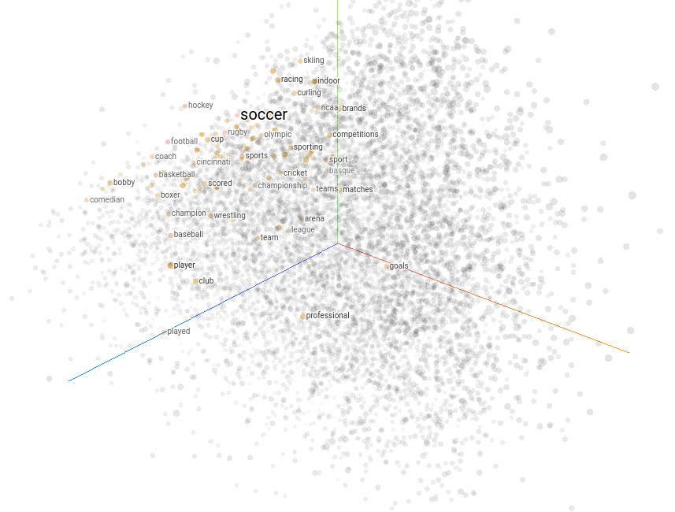

Trong bài viết về RNN, mình đã đề cập khá kỹ về mô hình này nhưng để ứng dụng được nó vào các bài toán thì ta cần phải làm thêm bước “số hóa” dữ liệu từ văn bản sao cho máy tính có thể hiểu được.
- Nếu máy tính hiểu được càng nhiều về các từ thì nghĩa là cách số hóa càng có hiệu quả. Do đó, ta cần quan tâm đến vấn đề “hiểu”. Hiểu như thế nào là đủ tốt? 😀
Đối với NLP, ta có những phương pháp (hay có thể nói là kỹ thuật) biểu diễn từ phổ biến là one-hot encoding, TF-IDF và Word Embedding. Nội dung của bài viết này sẽ tập trung vào one-hot encoding và Word Embedding.
One-hot encoding
Ý tưởng
Từ điển (vocabulary) là một thành phần không thể thiếu của mọi hệ thống ngôn ngữ. Những từ ta dùng thường ngày hầu như là sẽ nằm ở một vị trí nào đó trong từ điển (có thể các từ địa phương thì sẽ không có). One-hot encoding là phương pháp biểu diễn từ bằng chính thông tin vị trí này.
- Với những từ không có trong từ điển thì ta thường sử dụng một giá trị vị trí đặc biệt để cho biết từ đó là unknown.
Giả sử tập từ điển của chúng ta có $S$ từ và không có từ trên các văn bản là không có trong từ điển. Khi đó, mỗi từ sẽ được biểu diễn bằng một vector nhị phân có $S$ chiều, với duy nhất một phần tử bằng 1 tại chiều ứng với vị trí của từ đó trong từ điển và các phần tử còn lại là 0. Ví dụ:

Minh họa phương pháp one-hot encoding với kích thước từ điển là 9
Nguồn: Shane Lynn
{kind=link}
Khi kết hợp phương pháp one-hot encoding vào mô hình RNN để giải quyết các bài toán thì ở trong mỗi giai đoạn ta sẽ có:
- Input và label sẽ là các vector nhị phân tương ứng với các từ
- Output là một vector thể hiện một phân bố xác suất, với phần tử thứ $i$ là xác suất mà từ output là từ ở vị trí thứ $i$ trong từ điển (do đó activation function thường dùng ở đây chính là softmax)
Ví dụ áp dụng one-hot encoding vào RNN trong bài toán sinh văn bản theo từng kí tự
Nguồn: Stanford - Natural Language Processing
Vì sao ta lại sử dụng vector nhị phân để biểu diễn các từ mà không dùng luôn giá trị số thực là vị trí của từ trong từ điển?
- Câu hỏi này cũng giống như hỏi rằng trong bài toán image classification thì vì sao ta không cài đặt output là một số thực và sau đó làm tròn để có kết quả mà lại là một vector phân bố xác suất.
- Tất nhiên là nếu làm theo cách đó thì mọi thứ vẫn CÓ THỂ ổn, quá trình huấn luyện cũng có thể được thành công. Tuy nhiên, ta có những điều cần lưu tâm như sau:
- Với output là số thực như vậy thì cost function hầu như chắc chắn là MSE (Mean Square Error). Khi đó, quá trình huấn luyện sẽ rất dễ rơi vào vị trí tối ưu cục bộ.
- Nếu mà số từ trong từ điển là rất nhiều thì kết quả của các phép tính trong cách biểu diễn dùng số thực là rất lớn.
- Để ý rằng, trong các biểu diễn one-hot encoding thì khoảng cách giữa một từ với các từ khác nó sẽ bằng hằng số là $\sqrt{2}$. Trong khi đó, với cách biểu diễn dùng duy nhất số thực thì lại không, có những cặp từ rất gần nhau và có những cặp từ cực kì xa nhau, trong khi ta chưa có bất cứ điều gì thể hiện được rằng từ này nên gần với một từ hơn so với từ kia.
Hạn chế one-hot encoding
Trong cách biểu diễn one-hot encoding, ta thấy rằng máy tính đã có thể phân biệt được các từ với nhau, có thể biết được từ được dùng trong câu input là từ gì và có thể cho biết từ mà nó tính ra được ở output là từ gì. Nói chung là máy tính đã hiểu được “mặt trước” của các từ.
Tuy nhiên, ta vẫn chưa thể biểu diễn được mối quan hệ giữa các từ với nhau. Như đã đề cập ở phần trước, khoảng cách giữa hai cặp từ phân biệt bất kỳ đều bằng $\sqrt{2}$, trong khi những từ có nghĩa gần gần nhau như “good” và “nice” thì nên có khoảng cách gần nhau, còn những từ trái nghĩa nhau như “good” và “bad” thì cũng nên cách nhau rất xa. Chính vì yếu tố này mà thường thì việc áp dụng one-hot encoding vào RNN khó có thể mang lại kết quả như mong muốn.
Bên cạnh đó, cách biểu diễn one-hot encoding thật sự là rất tốn kém về mặt bộ nhớ 😀 Nếu mà kích thước từ điển rất lớn thì cứ mỗi từ như vậy ta lại cần một vector có số chiều khổng lồ để biểu diễn. Một cách khắc phục vấn đề này là sử dụng ma trận thưa (sparse matrix), nhưng mà việc cài đặt thì cũng không phải đơn giản.
Từ các hạn chế của one-hot encoding, ta có một phương pháp tốt hơn, vừa có thể biểu diễn được mối quan hệ giữa các từ và vừa tiết kiệm được bộ nhớ, đó là Word Embedding!
Word Embedding
Ý tưởng
Đầu tiên, embedding nói chung là phương pháp đưa một vector có số chiều lớn (thường ở dạng thưa, tức là hầu hết các phần tử đều bằng 0), về một vector có số chiều nhỏ hơn (và không thưa).
- Ta thấy ngay rằng one-hot vector để biểu diễn các từ trong một tập từ điển lớn chính là vector có số chiều lớn và ở dạng thưa 😀
- Embedding có thể được áp dụng ở nhiều mảng khác nhau chứ không phải mỗi xử lý ngôn ngữ, ví dụ như hình ảnh cũng có.
Word Embedding là một phương pháp biểu diễn các từ bằng một vector đặc trưng. Ví dụ, với các từ {man, woman, king, queen, apple, orange} và tập các đặc trưng {gender, age, food} thì ta có thể biểu diễn mỗi từ bằng một vector 3 chiều như sau:
| man | woman | king | queen | apple | orange | |
|---|---|---|---|---|---|---|
| gender | -1 | 1 | -0.9 | 0.97 | 0.0 | 0.01 |
| age | 0.3 | 0.25 | 0.7 | 0.69 | 0.02 | 0.0 |
| food | 0.01 | 0.0 | 0.005 | 0.015 | 0.97 | 0.96 |
- Trong bảng trên, mỗi từ trong từ điển ban đầu đã được ánh xạ thành một vector 3 chiều (còn one-hot vector để biểu diễn chúng thì có 6 chiều). Trong đó, giá trị vector ứng với mỗi từ sẽ chứa những nét đặc trưng về mặt ngữ nghĩa của từ đó.
- Kí hiệu $e_{word}$ là embedding vector của từ $word$. Ta có một số nhận xét sau:
- $e_{apple}$ và $e_{orange}$ có giá trị tại đặc trưng food rất cao và hai đặc trưng còn lại thì không.
- $e_{man}$ có đặc trưng gender là -1 còn $e_{woman}$ là 1, hàm ý rằng giới tính “man” và “woman” là trái ngược nhau.
- $e_{man}$ với $e_{king}$ có giá trị tại đặc trưng gender rất giống nhau, đối với age thì có sự khác biệt, hàm ý rằng “king” thì thường lớn tuổi hơn “man”. Ta có nhân xét tương tự với “woman” và “king”.
- Nếu ta tính thử độ tương đồng (similarity) giữa các vector (thường là khoảng cách Cosine hoặc khoảng cách Euclid), thì kết quả sẽ có ý nghĩa như sau:
- Hai vector $e_{man}$ và $e_{king}$ rất gần nhau. Tương tự với $e_{woman}$ và $e_{queen}$, $e_{apple}$ và $e_{orange}$. Điều này thể hiện rằng các từ trong mỗi cặp có quan hệ gần gũi với nhau về ngữ nghĩa.
- Hai vector $e_{man}$ và $e_{woman}$ có hướng gần như là ngược nhau, thể hiện rằng hai từ này có quan hệ trái ngược nhau.
Thông thường, người ta thường sử dụng phương pháp t-SNE để giảm chiều các embedding vector xuống 2 chiều và trực quan hóa chúng để có góc nhìn rõ hơn về Word Embedding. Ví dụ như hình bên dưới, với các từ có nghĩa tương tự nhau thì ta sẽ thấy chúng có xu hướng cùng thuộc về một cụm:

Sử dụng t-SNE để trực quan hóa các embedding vector
Nguồn: Neptune AI
Đối với trực quan hóa trong không gian 3 chiều thì các bạn có thể truy cập vào trang này của Tensorflow. Trong trang web đó, nếu tìm kiếm từ “soccer” thì ta sẽ thấy các vector được highlight lên là vector ứng với các từ có nghĩa rất tương tự, và hầu hết là liên quan đến thể thao.

Như vậy, phương pháp Word Embedding đã có thể khắc phục được hạn chế của one-hot encoding trong việc thể hiện mối quan hệ giữa các từ.
Tính chất của Word Embedding
Trong khả năng biểu diễn các từ bằng vector đặc trưng và thể hiện được mối quan hệ giữa từ đó với những từ khác, ta có một tính chất thú vị liên quan đến Analogy Reasoning (suy diễn tương tự).
- Ví dụ: Cho trước 3 từ “man”, “woman” và “king”. Trong đó, “man” đã có một quan hệ nhất định với “woman”. Ta cần tìm một từ sao cho quan hệ giữa “king” với từ này cũng tương tự như quan hệ giữa “man” và “woman”.
Nếu một hệ thống Word Embedding đủ tốt thì ta sẽ có tính chất rằng những cặp từ $(w_{i1}, w_{i2})$ mà có quan hệ giữa hai từ trong một cặp là rất tương tự nhau thì các vector $x_i = e_{w_{i1}} - e_{w_{i2}}$ sẽ có hướng cũng rất tương tự. Ví dụ:
Minh họa Analogy Reasoning
Nguồn: Polakowo
{kind=link}
Dựa vào tính chất này, ta có thể giải quyết câu hỏi đặt ra ở phía trên rằng từ cần tìm sẽ là “queen”. Để kiểm chứng, hãy xét lại bảng ở phần 2.1, ta có:
- $e_{man} -e_{woman} = \begin{bmatrix}-2 & 0.05 & 0.01\end{bmatrix}^\top$
- $e_{king} - e_{queen} = \begin{bmatrix}-1.87 & 0.01 & -0.01 \end{bmatrix}^\top$
Để biểu diễn bài toán analogy reasoning như ví dụ bên trên một cách hình thức hơn, ta có thể phát biểu như sau:
-
Tìm từ $w$ sao cho
$$w = \argmax_w \left ( \text{sim} ( e_w, e_{man} - e_{woman} + e_{king} )\right )$$
và kết quả là $w = queen$.
Sử dụng Word Embedding trong RNN
Trong phương pháp one-hot encoding, ta sử dụng các one-hot vector ở input và output của RNN. Đối với word-embedding thì ta sẽ thay đổi một chút ở input, còn output thì vẫn dùng one-hot encoding để biết được mô hình dự đoán từ nào. 😜
Tại sao lại như thế?
- Đối với input, đưa vào RNN embedding vector thì chắc chắn mô hình có thể học tốt hơn so với one-hot vector rồi.
- Trong output, ta thấy rằng việc mô hình tính ra một vector dạng phân bố xác suất và sau đó xác định từ tương ứng bằng cách softmax thì sẽ dễ hơn nhiều so với việc output ra một embedding vector rồi từ vector này đi tìm từ gốc. Thật ra thì mình chưa thấy ai thực hiện tìm từ dựa vào embedding vector cả. 😀
Như vậy, để sử dụng Word Embedding trong RNN thì ta sẽ dùng embedding vector của các từ để làm input cho RNN.
- Ví dụ: mượn tạm ảnh của các pháp sư Trung Hoa z =)) word-embedding-with-rnn.png
Minh họa sử dụng Word Embedding trong RNN
Nguồn: Pháp sư nào đó
{kind=link}
Lưu ý.
- Khi sử dụng Word Embedding trong RNN thì thường ta sẽ dùng theo hướng transfer learning hoặc fine-tuning. Điều này có nghĩa là các embedding vector của mỗi từ có thể đã được cung cấp sẵn, ta chỉ việc đem vào dùng trong mô hình là đủ và nếu cần thiết thì cũng sẽ tiếp tục huấn luyện trên nền tảng đã có.
Học Word Embedding
Embedding matrix
Ở các phần trên thì ta chỉ mới nêu sơ lược về phương pháp Word Embedding chứ chưa đề cập đến việc làm thế nào để xây dựng được các vector biểu diễn từ như vậy. Đầu tiên, thứ chúng ta cần xây dựng trong Word Embedding được gọi là embedding matrix (kí hiệu là $E$), với số dòng là số đặc trưng được dùng để mô tả cho mỗi từ và số cột bằng với số từ trong từ điển.
-
Để minh họa, ta sẽ dùng lại ví dụ ở phần 2.1. embedding matrix $E$ sẽ là
$$ E = \begin{bmatrix}-1 & 1 & -0.9 & 0.97 & 0.0 & 0.01 \\ 0.3 & 0.25 & 0.7 & 0.69 & 0.02 & 0.0 \\ 0.01 & 0.0 & 0.005 & 0.015 & 0.97 & 0.96\end{bmatrix} $$
-
Với từ $man$, one-hot vector của từ này là
$$o_{man} = \begin{bmatrix} 1 & 0 & 0 & 0 & 0 & 0\end{bmatrix}^\top$$
-
Embedding vector của $man$ sẽ được tính bằng công thức
$$e_{man} = E \cdot o_{man} = \begin{bmatrix} -1 & 0.3 & 0.01 \end{bmatrix}^\top$$
Để xây dựng các embedding matrix, ta có hai hướng phổ biến như sau:
- Word2vec: Huấn luyện một mô hình MLP. embedding matrix sẽ là một ma trận trọng số trong mô hình MLP sau khi đã huấn luyện xong.
- GloVe (Global Vector for word representations): Mạnh hơn Word2vec, có sử dụng thêm những kỹ thuật liên quan đến xác suất thống kê.
Trong bài viết này, mình sẽ tập trung vào word2vec.
Word2vec
Word2vec là một mô hình rất đơn giản và nổi tiếng trong việc tạo embedding matrix. Ý tưởng của word2vec xuất phát từ hai nhận xét sau:
- Hai từ thường xuất hiện trong các ngữ cảnh tương tự nhau thì có thể có quan hệ gần gũi nhau về mặt ngữ nghĩa.
- Khi cho biết trước các từ xung quanh từ bị thiếu trong câu, ta có thể dự đoán ra được từ đó. Ví dụ, với câu “Husky là một … chó rất ngáo” thì từ trong dấu ba chấm có khả năng cao là “loài”. Đây là ví dụ với câu ngắn, còn nếu câu dài thì đôi khi ta chỉ cần xét tầm 10 từ xung quanh từ cần dự đoán là đã đủ để đoán ra được.
Đầu tiên, ta đề cập đến khái niệm từ mục tiêu (target word) và từ ngữ cảnh (context word). Có thể nói từ mục tiêu là từ ta đang xem xét và từ ngữ cảnh là các từ xuất hiện xung quanh từ mục tiêu ở trong các đoạn văn bản của kho dữ liệu, với phạm vi là cách từ mục tiêu không quá $\dfrac{C}{2}$ từ. Vùng phạm vi này còn lại là cửa sổ trượt (sliding window).
- Với câu ví dụ ở trên thì, từ “loài” là target word. Nếu xét cửa sổ trượt có kích thước $C = 4$ thì các context word sẽ bao gồm “là”, “một”, “chó”, “rất”.
- Để có cái nhìn rõ hơn về các khái niệm này, ta xét ví dụ bên dưới với kích thước sliding window là 4.
Từ màu xanh là target word, các từ trong ô màu trắng là context word
Nguồn: Machine Learning cho dữ liệu dạng bảng
{kind=link}
Lưu ý.
- Từ phương pháp word2vec, ta sẽ có hai embedding vector cho mỗi từ, ứng với hai trường hợp là từ đó đóng vai trò target word và context word. Lý do là ví trong mỗi tình huống thì ngữ nghĩa của nó có thể sẽ khác nhau.
Trong word2vec, ta sẽ đi xây dựng một mô hình MLP (Multi-layer Perceptron, hay nói cách khác là Neural Network) chỉ gồm 1 hidden layer, với mục đích có thể là:
- Dựa vào target word để dự đoán context word
- Dựa vào các context word để dự đoán target word
Tùy vào mục đích mà ta sẽ có một kiến trúc MLP khác nhau. Với mục đích (1) thì ta có Skip-gram, mục đích (2) là CBoW (Continuous Bag of Word)
Quay lại với hai nhận xét đã mở ra ý tưởng cho word2vec thì nhận xét thứ nhất được thể hiện rõ hơn ở trong Skip-gram và nhận xét thứ hai thì ở trong CBoW 😀 Để có cái nhìn tổng quan về sự khác biệt giữa Skip-gram và CBoW, ta có hình ảnh so sánh như bên dưới:
Sự khác biệt giữa CBoW và skip-gram trong một câu với target word là W(t), context word là W(t-2), W(t-1), W(t+1), W(t+2)
Nguồn: https://i.stack.imgur.com/ShJJX.png
{kind=link}
Skip-gram
Skip-gram là cách xây dựng mô hình MLP theo hướng dự đoán context word dựa vào target word. Về mặt toán học thì ta sẽ đi tìm xác suất xảy ra các context word khi biết trước target word.
-
Ví dụ, kho dữ liệu ta có hai câu là {“em ấy học toán tốt”, “em ấy học toán giỏi”}. Với từ mục tiêu “học” và kích thước sliding window là $C=4$, ta sẽ tìm xác suất
$$ P_0 = P(\text{“em”}, \text{“ấy”}, \text{“toán”}, \text{“tốt”}, \text{“giỏi”} | \text{“học”}) $$
Giả sử các từ trên là độc lập với nhau, khi đó
$$ P_0 = P(\text{“em”} | \text{“học”}) \cdot P(\text{“ấy”} | \text{“học”}) \cdot P(\text{“toán”} | \text{“học”}) \cdot P(\text{“tốt”} | \text{“học”}) \cdot P(\text{“giỏi”} | \text{“học”}) $$
-
Tập từ điển sẽ có 6 từ nên input của mô hình MLP sẽ là vector 6 chiều. Ta sử dụng hidden layer với 300 neuron. Xét hai cặp (context, target) lần lượt là (học, tốt) và (học, giỏi). Khi đó, mô hình skip-gram sẽ có dạng như hình bên dưới, với $\bold{U}$ và $\bold{V}$ lần lượt là ma trận trọng số giữa layer input-hidden và hidden-output.
Tham khảo: ProtonX - Word2vec
- Ta thấy rằng, hai từ “tốt” và “giỏi” cùng xuất hiện trong một ngữ cảnh, do đó chúng nên có quan hệ nào đó về mặt ngữ nghĩa 😀
Lưu ý.
- Shape của $\bold{U}$ có thể là (embedding_dim x vocab_size), tức là $(300 \times 6)$, hoặc là (vocab_size x embedding_dim), tức là $(6 \times 300)$. Với bài viết này thì mình sử dụng (embedding_dim x vocab_size). Tương tự như với $\bold{V}$.
Khi lần đầu tìm hiểu về Skip-gram, mình có một thắc mắc mà mình nghĩ là cũng rất nhiều người có cùng thắc mắc như thế 😜 Trong hình trên, ta thấy rằng mô hình cùng nhận vào một input là one-hot vector của từ học, sử dụng cùng hai ma trận trọng số $\bold{U}$ và $\bold{V}$, vì sao label lại có những giá trị khác nhau?
- Thực chất, trong quá trình huấn luyện skip-gram, ta sẽ sử dụng optimizer SGD (stochastic gradient descent), tại mỗi thời điểm thì ta sẽ chọn ngẫu nhiên một cặp (target, context) rồi tiến hành cập nhật các ma trận trọng số một chút dựa theo cặp được chọn. Trong đó, phép chọn này không nên tuân theo phân phối đều mà nên có heuristic một chút, ví dụ như cặp nào xuất hiện càng nhiều thì có xác suất được chọn càng cao. Do đó, cặp (target, context) nào xuất hiện càng nhiều thì mô hình càng “học” được nhiều thứ về nó.
- Kết quả là sau quá trình huấn luyện, từ dự đoán của một context word sẽ là một phân bố xác suất “đủ gần” với tất cả các target word của nó trong kho dữ liệu.
Ngoài ra, trong quá trình huấn luyện skip-gram thì chúng ta thường sử dụng loss function là cross-entropy (có dùng đến $\text{softmax}$ activation function).
CBoW (Continuous Bag of Words)
Có thể nói CBoW là một phiên bản ngược lại của Skip-gram. Trong CBoW, ta sẽ sử dụng các context word để dự đoán target word. Về mặt toán học thì ta sẽ đi tìm xác suất xảy ra target word khi biết trước các context word.
- Với cùng ví dụ như phần về Skip-gram, ta sẽ tìm xác suất
$$P_0 = P(\text{“học”} | \text{“em”}, \text{“ấy”}, \text{“toán”}, \text{“tốt”}, \text{“giỏi”})$$
- Lúc này, ta thường tính một “từ trung bình” của các context word (embedding vector trung bình), sau đó thay vào biểu thức trên
$$P_0 = P(\text{“học”} | \overline{word})$$
- Để dễ mình họa, ta xét hai context words “em”, “toán” của target word “học”. Khi đó, mô hình CBoW sẽ có dạng như hình bên dưới, với $\bold{V}$ và $\bold{U}$ là ma trận trọng số giữa layer input-hidden và hidden-output. Lưu ý rằng, sau khi tính ra output tại hidden layer của các context word thì ta sẽ thực hiện thao tác tính trung bình để có một vector trung bình, sau đó mới tính ra predicted word.
Tham khảo: ProtonX - Word2vec
Trong huấn luyện mô hình, ta cũng loss function là cross-entropy và optimizer SGD giống như Skip-gram. Trong đó, ở mỗi bước của SGD thì thứ ta chọn ngẫu nhiên là một câu ngắn trong kho dữ liệu.
Trích xuất embedding matrix
Sau khi huấn luyện xong các mô hình như Skip-gram và CBoW thì ta thu được các ma trận trọng số $\bold{U}$ và $\bold{V}$. Nếu các bạn để ý thì trong mỗi mô hình, thứ tự mình sử dụng kí hiệu $\bold{U}$ và $\bold{V}$ là khác nhau.
- Trong Skip-gram, $\bold{U}$ là ma trận trọng số nối giữa input-hidden, liên quan đến target word và $\bold{V}$ thì nối giữa hidden-output và nó liên quan đến context word.
- Cũng vì sự “liên quan” giữa ma trận trọng số là các từ, trong CBoW thì $\bold{V}$ được đưa lên thành ma trận trọng số giữa input-hidden, tương tự cho $\bold{U}$.
Ta biết rằng ma trận trọng số nối giữa layer input-hidden có nhiệm vụ chính là “học” các đặc trưng của từ input, còn ma trận trọng số nối giữa hidden-output thì có nhiệm vụ chính là dự đoán từ. Như vậy, rõ ràng là ta nên dùng ma trận trọng số đầu tiên để làm embedding matrix. Tuy nhiên, có sự khác biệt nào giữa các ma trận thu được từ Skip-gram và CBoW?
- Đối với Skip-gram, $\bold{U}$ liên quan trực tiếp đến target word. Khi đó, embedding vector của mỗi từ tính được dựa vào $\bold{U}$ sẽ mang nhiều thông tin về mặt ngữ nghĩa hơn.
- Ngược lại, trong CBoW, $\bold{V}$ liên quan trực tiếp đến các context word nên embedding vector của mỗi từ tính được sẽ nghiêng về phía ngữ pháp.
Ví dụ, với từ “cat”, ta tính embedding vector của nó theo cả hai ma trận $\bold{U}$ trong Skip-gram và $\bold{V}$ trong CBoW. Tiếp đến thì ta sẽ tìm từ tương đồng với “cat” nhất . Khi đó, sử dụng $\bold{U}$ thì kết quả có thể là “dog”, còn dùng $\bold{V}$ thì rất có thể sẽ là “cats” 😀.
Nhận xét
Hai hướng tiếp cận Skip-gram và CBoW đều có những điểm mạnh và yếu của riêng nó (ví dụ như về mặt ngữ nghĩa và ngữ pháp) nhưng nhìn chung thì chúng đều cho ta những embedding vector đủ tốt để sử dụng trong các bài toán khác.
Tuy nhiên, ta có một điểm yếu khá quan trọng trong việc huấn luyện Skip-gram và CBoW. Về hàm loss function thì mình đã đề cập là chúng đều sử dụng cross-entropy và cần đến $\text{softmax}$ activation function. Trong trường hợp từ điển có rất nhiều từ thì thao tác tính $\text{softmax}$ này sẽ rất rất lâu 😀
LĐể khắc phục, ta có một số cách như là sử dụng Hierarchy Softmax hoặc là Negative Sampling. Trong bài viết này thì mình sẽ không đề cập đến chúng 😜
Vấn đề thiên vị trong Word Embdding
Nghe rất là ảo, nhưng mà nó có tồn tại 😅 Điều này xảy ra phần lớn là do kho dữ liệu văn bản mà chúng ta sử dụng để xây dựng embedding matrix.
Để lấy ví dụ, mình sẽ xét trường hợp liên quan đến giới tính. Cùng quay lại bài toán Analogy Reasoning trong phần 2.2:
- Với 3 từ “man”, “woman” và “king” thì ta có thể tìm được từ “queen” sao cho quan hệ giữa “king” và “queen” sẽ tương tự với “man" và “woman”.
- Bây giờ giả sử ta có “man”, “doctor”, “woman” và cần tìm từ X sao cho quan hệ giữa X và “woman” tương tự như “man" và “doctor”. Nếu kho dữ liệu liên quan phần lớn đến việc người đàn ông là trụ cột trong gia đình (xã hội thời xa xưa) thì kết quả X rất có thể là “babysitter” (người trông trẻ). Như vậy, đã có vấn đề thiên vị (biasing) nam giới.
Để hạn chế vấn đề này, ta có một số phương pháp như Hard Debiasing, Soft Debiasing. Mình sẽ không đề cập đến những phương pháp này ở đây, các bạn có thể tự tìm đọc nhé 😀 Nó phần lớn là liên quan đến các phép biến đổi toán học.
Dưới đây là minh họa cho vấn đề thiên vị mà mình đã lấy ví dụ ở trên để cho các bạn dễ hình dung:
- Đầu tiên, hướng thay đổi giới tính là từ trái qua phải. Vì vấn đề thiên vị đang xảy ra liên quan đến giới tính nên ta gọi đây là bias direction.
- Trước khi điều chỉnh, ta thấy embedding vector của doctor nghiêng về phía bên nam giới hơn, tương tự như babysitter.
- Sau khi hạn chế vấn đề thiên vị điều chỉnh, các embedding vector của doctor và baby sitter nên nghiêng về phía “công bằng” hơn đối với hai giới tính, tức là hướng trực giao với bias direction.
Trước khi điều chỉnh (embedding vector gốc)
Sau khi thực hiện debiasing
Nguồn: Vagdevik